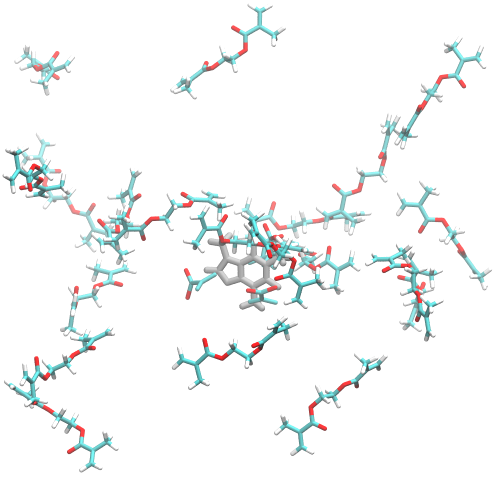

Caffeine
Preparation
A simple example of MIP polymerization is that given by Teixeira et al.. The caffeine in this example is in a solution of acetonitrile, with the polymerization of MAA and EGDMA initiated by ACPA in a molar ratio of 1:4:20:~0.25. Depending on the template, heavily docked small molecules will result in structures with high energies that will be unstable in Gromacs. To supplement the 4 initial MAA, we can use insert-molecules.
The config file generated should look something like this:
center:
- -0.034
- 0.006
- -0.105
# only for Vina
energy_range: 4
# for both Vina and gnina, default is 10
exhaustiveness: 100
fms:
- MAA
- 4
protein: caffeine.pdb
scale: 1
size:
- 30
- 40
- 20
Interval FM gnina gnina Affinity Intramol
pose score affinity (kcal/mol) (kcal/mol)
0 MAA 0.876 3.645 -0.680 0.000
1 MAA 0.855 3.758 -0.300 0.000
2 MAA 0.466 2.755 9.370 0.000
3 MAA 0.579 3.107 4.700 0.000
Precomplexation ━━━━━━━━━━━━━━━━━━━━━━━━━━━━━━━━━━━━━━━━ 100% 0:00:07
Inserting Cross-linkers

To add more functional monomers to the system, we can use gmx insert-molecules. First, we can use MIPkit -write_pdb EGDMA to write out a EGDMA fm to a pdb file in our directory. Then, we can do:
# Center in our 4 x 4 x 4 box
gmx editconf -f caffeine.pdb -translate 2 2 2 -o caffeine-c.pdb
gmx editconf -f maa-4-gnina.pdb -translate 2 2 2 -o maa-c.pdb
gmx insert-molecules -f maa-c.pdb -ci EGDMA.pdb -nmol 20 -o recipe.pdb -box 4 4 4
to insert 20 EGDMA monomers into an 4 x 4 x 4 nm box.
Polymerization
Compared to a fully docked system, we are losing some initial configuration benefits. However, considering EGDMA is the crosslinker, we can likely assume that MAA will be contributing most of the interaction energy.
Since we are targeting caffeine, we will use the -template option rather than -protein. This avoids the use of gmx pdb2gmx, which expects amino acids as residues rather than whatever we are giving it. Now using caffeine.pdb as our template and recipe.pdb, we can begin the process with:
MIPkit -react -template "caffeine.pdb" -cplx "recipe.pdb" -implicit 0 -box 4 4 4 -min -cycles 0
This will populate a 4 x 4 x 4 nm box with water and run a minimization that we can then use with acetonitrile to replicate the experiment. This minimization is necessary as solvating directly with MeCN can result in a higher energy simulation that will trigger errors in GROMACS.
MIPkit -react -template "caffeine.pdb" -cplx "recipe.pdb" -solvent mcn -explict acpa -box 4 4 4 -min -cycles 20
Potential Errors
- CUDA Assertion Error: Small molecule docking seems to be a common pain point. This error is typically due to high energy configurations causing singularity and memory errors within GROMACS, and is the result of high energy docked configurations generated in GNINA and VINA. If this occurs, try minimizing, docking only the functional monomers, or bypassing docking altogether using gmx insert-molecules.